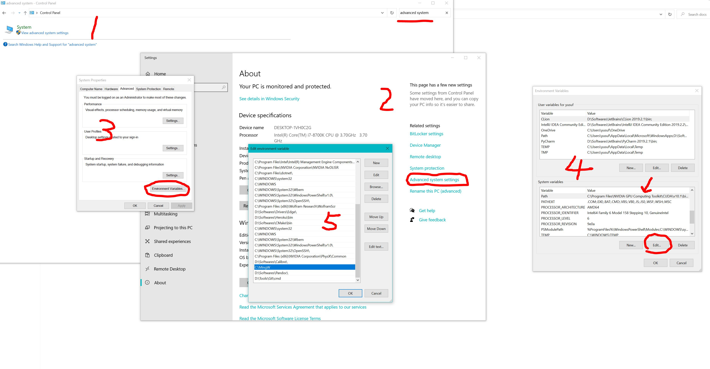

4. Installation
4.1. Requirements
A Fortran compiler — GNU
gfortran(version 9 or newer) or Intelifort/ifx. FOCEX and ANFOMOD need nothing else.An MPI implementation (
mpif90) — only for SCOP8 and THERMACOND.make.Optional, for plotting the results:
gnuplot.
No external numerical library is required: the LAPACK routine used for the
diagonalisation (zhegv) is bundled with the source.
4.2. Getting the code
git clone https://github.com/KeivanS/Anharmonic-lattice-dynamics.git
cd Anharmonic-lattice-dynamics
4.3. Building everything at once
The top-level make.inc holds the compiler settings shared by the four codes:
DESTDIR = ~/ALADYN/bin
# ANFOMOD, FOCEX
FF = gfortran
# SCOP8, THERMACOND
FC = mpif90
F90 = mpif90
FLAGS = -O2 -fcheck=all -ffree-line-length-0
Edit it if you use a different compiler or want a different installation directory, then
make # builds ANFOMOD, FOCEX, SCOP8 and THERMACOND
make clean # removes the object and module files
Finally add the installation directory to your PATH — put the line in your
~/.bashrc or ~/.zshrc so that it is set in every session:
export PATH=${PATH}:~/ALADYN/bin
FOCEX
mkdir -p ~/BIN # see the note below
cd FOCEX
make
This compiles the sources listed in FOCEX/Makefile and produces a single
executable. Two details of that Makefile are worth knowing:
the name of the executable is set by the
exevariable near the top (currentlyv16, following the version numberverof the code), andthe executable is moved to
~/BIN, not to theDESTDIRofmake.inc. Create that directory first, or change themvline to install somewhere else.
FOCEX/Makefile also has its own FF and FLAGS variables. The default
FF = gfortran
FLAGS = -O2 -fcheck=all
is a good compromise between speed and safety. Useful alternatives, commented
out in the file, are -fbacktrace -g (for debugging) and
-Wall -Wextra -fimplicit-none (for development).
The utility programs
The tools that prepare the input of FOCEX and post-process DFT output are built separately:
mkdir -p ~/ALADYN/bin # or whatever DESTDIR you set in make.inc
cd FOCEX/utility
make
This produces four executables and moves them to DESTDIR:
Executable |
Purpose |
|---|---|
|
Builds a supercell and generates thermally displaced snapshots
( |
|
Extracts positions, forces and energy from a VASP |
|
The same for a Quantum Espresso (PWSCF) output file, whose name is read
from standard input: |
|
Converts a POSCAR to |
Warning
sc_snaps.x stops at run time with Recursive call to nonrecursive
procedure 'findif' when it is built with -fcheck=all, as the default
make.inc above does: -fcheck=all implies -fcheck=recursion, and
the finite-difference helper does call itself through d1v/d2v.
Compiled without the checks (plain -O2) it runs. To keep the checks, add
-frecursive:
gfortran -O2 -fcheck=all -frecursive -ffree-line-length-0 sc_snaps.f90 -o sc_snaps.x
The standalone SC-SNAPS release (Running SC-SNAPS) builds with plain -O2
and is not affected.
SCOP8
On Linux
Adjust the
FLAGSoption inSCOP8/Makefileif you need different compiler flags:FLAGS= #-O3 #-C # to check everything O3 #g -p #for profiling with gprof
Run
makeinSCOP8; this creates the binarymain.x.
On Windows
Put the MinGW package under the root folder, download here. The newest version of MinGW may not work properly.
Open Control Panel > System advanced settings and add the path of
root:\MingW, see below:
Install the IDE code::blocks, download here.
Set up the environment in code::blocks: menu > settings > compiler, set GNU Fortran as default and auto-detect compilers (you may need to uncheck all the optional compiling options).
Load the project in code::blocks by double clicking test.cbp.
Compile and run the code by pressing F9.
{kind=link}
THERMACOND
Run
makein theTHERMACONDdirectory. THERMACOND needs agfortrancompiler and MPI. After a successful compilation, a binary named after the version (e.g.kap8for version 8) is created in that directory; it takes no input from the terminal and is invoked simply as./kap8.To compute the collision matrices in parallel, the bash script
splitjob.shdistributes the k-mesh over many cores.
4.4. Checking the installation
The quickest end-to-end test is the germanium example shipped with FOCEX; see Quick start: the Ge example. It exercises the symmetry analysis, the SVD fit and the whole phonon/thermodynamics post-processing, and finishes in a few minutes on a single core.